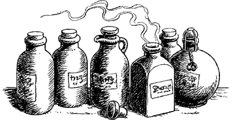

341
You unfurl the map and try to find your present location. At length you discover where you are and, marked by a tiny cipher, you see that there is a hidden lever which activates the wall. You examine the surrounding bricks carefully and soon discover the false panel which contains the lever. You pull it and the wall glides inwards before moving away to your right. It reveals a small well-kept chamber, its walls lined with shelves containing hundreds of stoppered jars, each one neatly labelled.
The jars contain all manner of compounds and elements, from worthless dirt to precious gold dust, and many herbs besides. You search along the shelves and take down half a dozen jars whose contents you recognize:
- Laumspur (Enough for 5 doses) Restores 4 ENDURANCE points when swallowed after combat.
- Alether (Enough for 4 doses) Increases COMBAT SKILL by 2 points for duration of one fight only.
- Gallowbrush (Enough for 2 doses) Induces 10 hours’ sleep and loss of 2 ENDURANCE points per dose.
- Sabito (Enough for 2 doses) Enables user to breathe underwater.
- Laumwort (Enough for 3 doses) Restores 2 ENDURANCE points if swallowed before or after combat.
- Oede (Enough for 1 dose) Very rare and valuable. Many healing properties. Cures serious diseases. Restores 10 ENDURANCE points if swallowed before or after combat.
If you wish to keep one or more of the above jars, remember to record your choice on your Action Chart. Each jar contains all of a given herb or potion in a concentrated form created by the Cener Druids (e.g. all five doses of Laumspur are contained in a single jar). Each jar counts as one Backpack Item.
{kind=link}

Apart from the secret door by which you entered, you notice that there is a narrow passageway which leads out of this room.
If you wish to leave the room by this passageway, turn to 214.
If you wish to leave by the secret door and retrace your steps all the way back to the west passage, turn to 271.